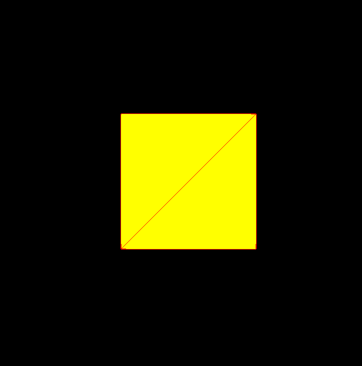
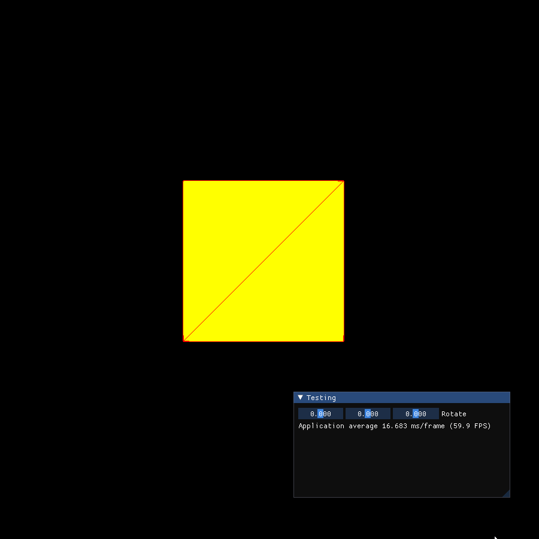
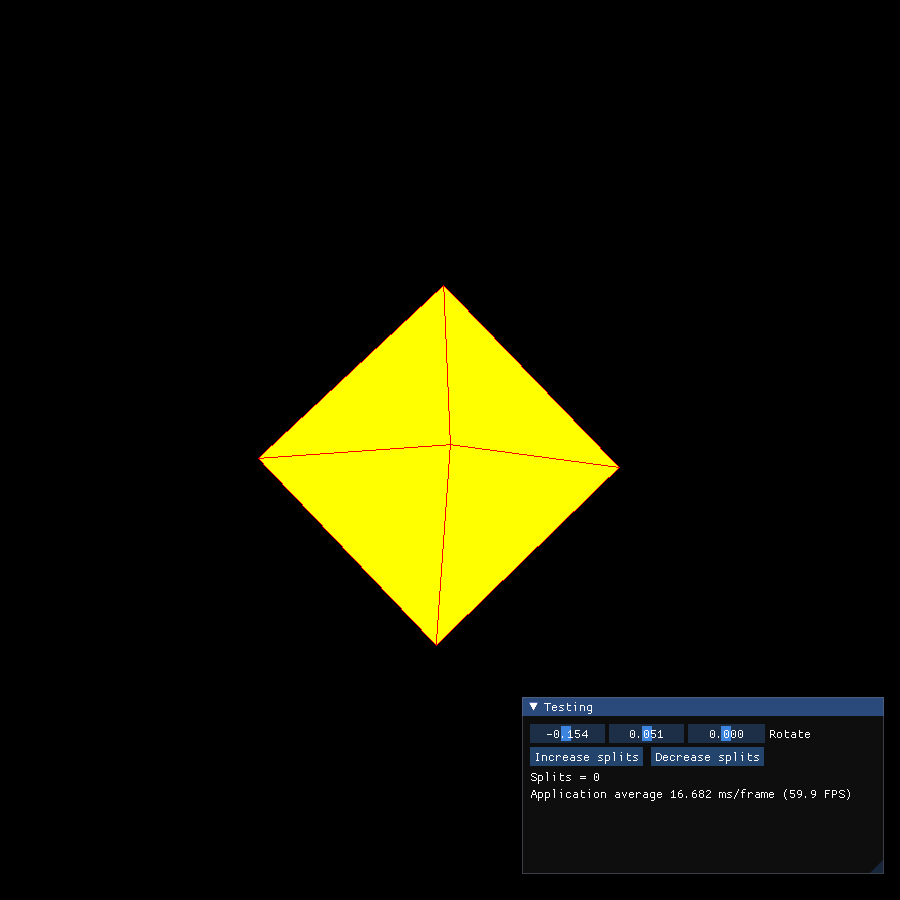
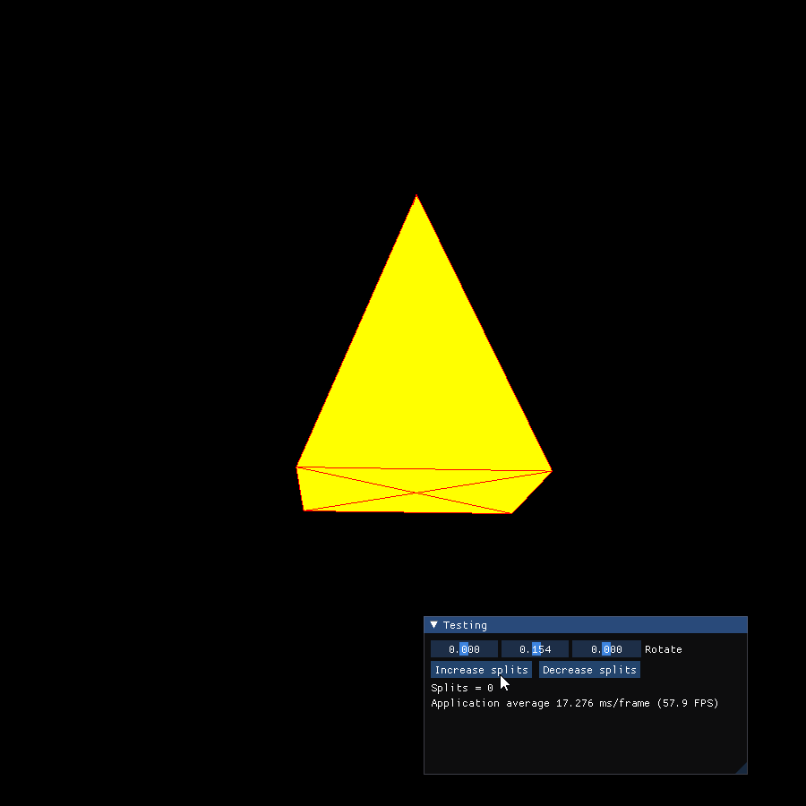

We already tried out making primitive triangles in a three-dimensional setting, so we decided to start out with a cube due to its simplicity. We simply needed to set the appropriate vertices and enable z-buffer depth testing
for a correct model to be displayed.

Primitive cube using triangles
This is a 3D object but it doesn't look that way yet. We can apply tranformation matrices, specifically rotation matrices, to make it turn and expose it's "3D-ness".
By this point we were already getting tired of manually changing the rotation matrices on every compile. To remedy this we decided to take the assistance of a useful tool called ImGUI
that would allow us to adjust values in realtime in a GUI inspector. This was a great move on our part and it remained useful through the rest of the project.

Cube with live rotation about the 3 axes
The next primitive we rendered was a sphere. One approach to rendering this is to:
1) Render an Octagon
2) Tessellate the surfaces
3) Normalize all the vertices to be a fixed distance away from the centre

Octagon tessellated and normalized a.k.a Octasphere
Another method of generating a sphere is to tessellate an icosahedron instead of an octagon, known as an icosphere. This is the result:
The next primitive we rendered was a cone. For that, we needed to do 3 things again:
1) Render a square pyramid
2) Split the faces vertically

Square pyramid with vertical splits
3) Normalize the base vertices so that they are a fixed distance from the the centre of the base
Now that that was done, we decided to start off with some good camera actions to interact with the scene properly.